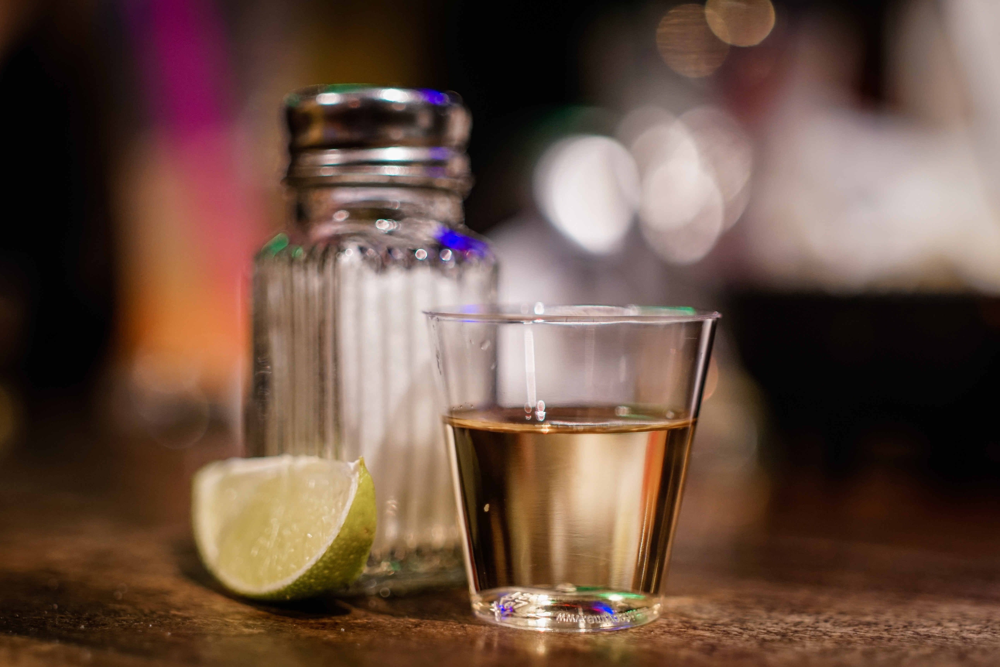
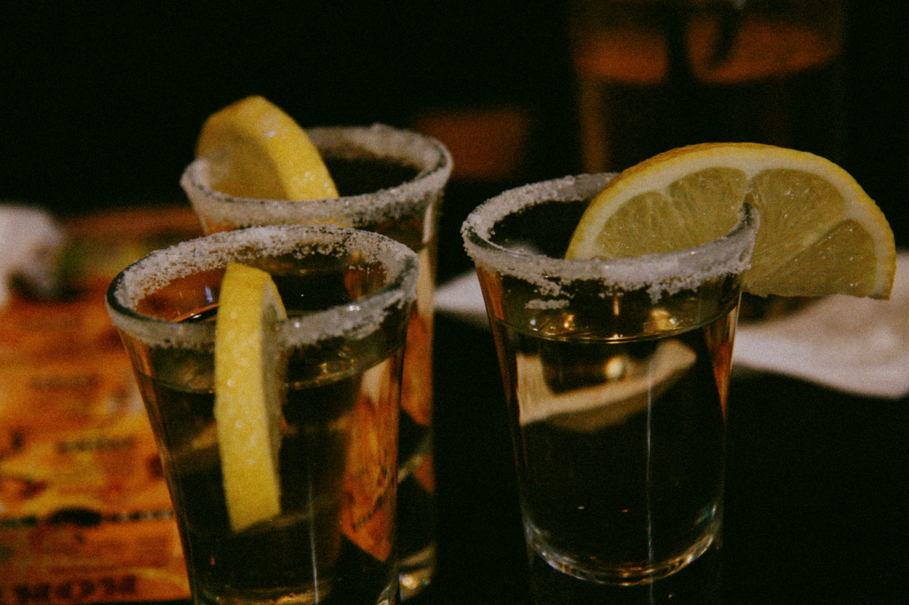
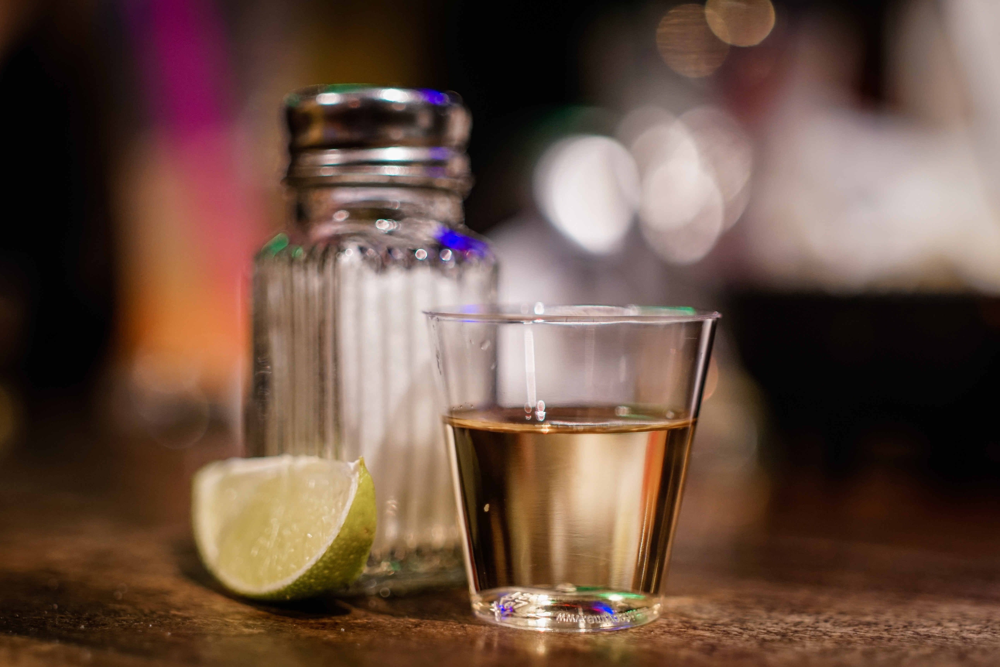
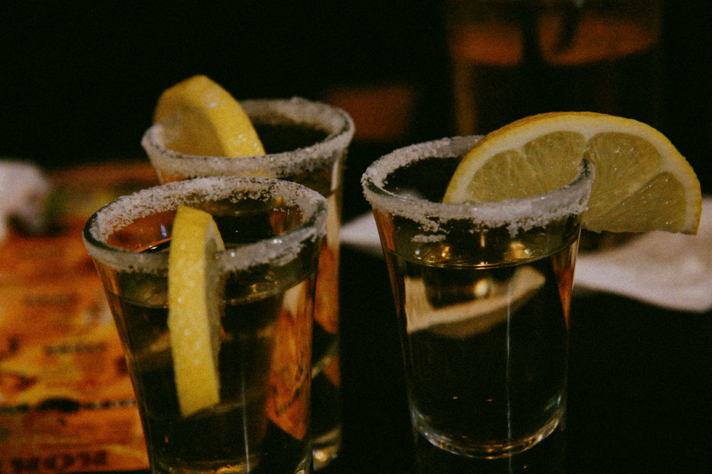
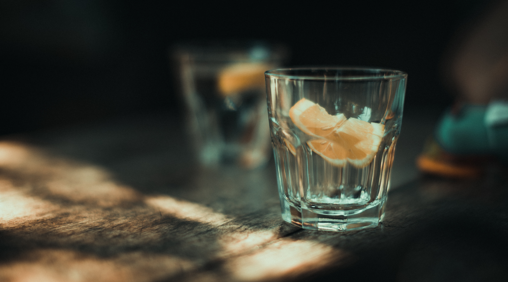
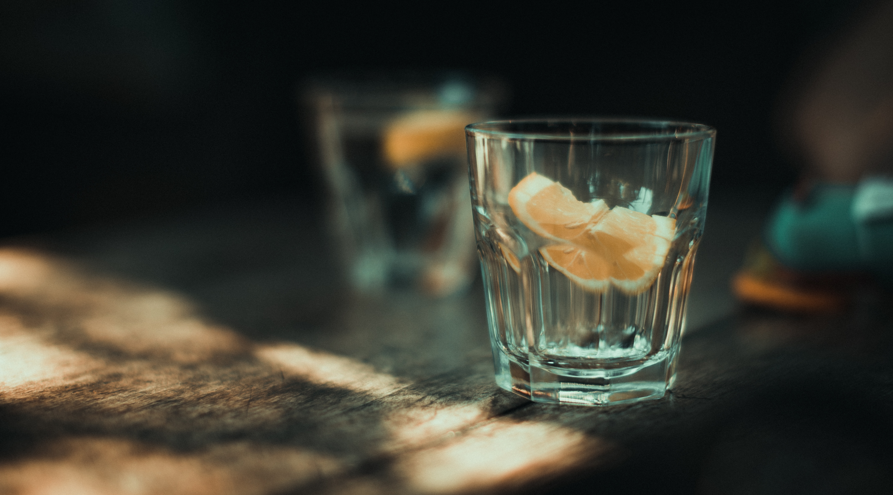

Historia
Don Ruben Guzman fue el fundador de DAF Tequila. La historia comienza a escribirse en 1758,
cuando obtiene el título de Propiedad de Tierras, cuya principal actividad fue el cultivo de agave. De esta manera se
comprueba que este fue el año en el que comenzó el cultivo de lo que años después sería DAF y un Tequila Tradicional en México.
Don Ruben, obtuvo la primera licencia para producir y distribuir tequila en 1795. A este año se le considera como el
nacimiento de la larga tradición de Tequila DAF; este era el inicio de la historia de los mejores Tequilas de México y los más populares del mundo.
Realizacion
Molienda
La molienda consiste en extirpar, estrujar o pisar las piñas de agave desmembradas y cocidas hasta convertirlas en una pulpa fácil de exprimir para extraerle el máximo de su jugo o miel para que sea fermentado y se convierta en el alcohol del tequila.

Destilacion
En el proceso de destilación, se aplica calor al alambique que contiene el mosto fermentado. El alcohol se evapora y se condensa a un grado más alto. Hay dos procesos principales para destilar el tequila y el tamaño y la forma del alambique tienden a influir en el producto final.

Envasado
El Tequila se debe envasar en recipientes nuevos de tipo sanitario. Los materiales permitidos actualmente son vidrio, aluminio, cartón laminado, acero inoxidable y polietilén tereftalato (PET). La capacidad de cada envase no debe ser mayor de 5 litros.

Galeria
 



 
